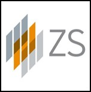

ZS
DATA SCIENCE MANAGERJANUARY 2020 - PRESENT
Track Lead for Advanced Data Science (ADS) Track, New Delhi
Leading data science projects, products development, and workstreams under newly formed Non-Healthcare (NHC) Analytics Space.
Focused on growing NHC Analytics space across India locations from inception in Jan-2020 to (currently) 20+ members through recruitments, resource alignment, staffing, and other related activities
- Leading an 8-member team to design and develop a multi-model ecosystem under ‘AI-Guided Selling’ initiative, focused on enabling inside sales teams across B2B companies
- Includes model to determine churn/leakage, lifetime value, upsell/cross-sell/net new sell, new customer, purchase value, relationship management, opportunity conversion optimization, and forecast CHI (customer health index) for a customer
- Models are developed through end-to-end automated model generation process (AutoFeaturization + AutoML) and supplemented through explanation model framework for faster and low-inertia adoption by end-users
- The customizable AI Guided selling ecosystem is molded as a cloud-agnostic, hybrid-SaaS product
- Developing AI/ML system DevOps as the in-house capability to automate ML system lifecycle management and deployment
DATA SCIENCE CONSULTANTJANUARY 2018 - DECEMBER 2019
Led 12+ member team to design and develop a portfolio of ML/AI products and systems for a Big-5 technology company.
Previously led 6-member team to create AI products in real world evidence (RWE) & clinical trial optimization (CTO) domain under R&D Excellence practice area.
- Developing AI/ML system DevOps as in-house capability to automate ML system lifecycle management and deployment
- Developed propensity models to advance client’s Go To Market (GTM) strategy of their product portfolio targeting 18K+ accounts
- Achieved AUROC of 78% in predicting accounts’ propensity to buy new products based on their current purchase and consumption patterns, enabling account executives to drive targeted sales efforts
- Led a 10+ member team to develop and enhance multiple ML-model ecosystem for a top-5 technology company, focused on optimizing the identification from ~7M leads across 100+ countries to prioritization of selected ~700K leads across sales channels
- Evolved the ML system from a 2-model to an 8-model ecosystem
- Achieved ~$50M growth in annual revenue by integrating purchase value model in the ecosystem
- Increased revenue by ~$13M through a model that focus on sales team’s effort for lead prioritization
- Evaluated and added features from four new data sources, resulting in ~$8M increase in annual revenue
- Achieved AUROC of 84% on new propensity model developed for different sales channel (Partner Channel)
- Streamlined hypotheses testing, feature engineering, and model experimentation for optimizing model ecosystem
- Assessed impact of model configuration change, corrected for model drift and self-fulfilling prophecy in model ecosystem
- Liaised with ML engineering team to streamline processes and successfully complete 7+ feature release cycles
- Won Project Champion (Innovation of the Year) - 2019
- Developed algorithm for predicting specific medical diagnosis in next six months using patients’ medical history and event data
- Achieved AUPRC of 66% through 1-D CNN-RNN hybrid model to identify 25,000+ naïve patients/year
- Exposed opportunity worth $150 MM/year from highly imbalanced EHR data (~2% positive class)
- Designed AI-enabled automated schema matching process to convert raw clinical trial datasets for disparate schema to standard format
- Achieved 87+% average accuracy with a runtime of ~2 mins/dataset, improving over 11% accuracy achieved by client’s in-house team
- Techniques used: Shingle-phrase mapping, semantic lookup dictionary, sentence2Vec, WordNet, SVM, XGBoost, neural networks
- $8MM of direct cost saved for client; Attracted $800K worth of project work; Won Project Champion (Innovation of the Year) - 2018
- Results were showcased in SCDM 2018 Annual Conference (World’s Top Clinical Data Management Event)
DATA SCIENCE ASSOCIATE CONSULTANTJANUARY 2016 - DECEMBER 2017
Among the first (of ~15 in US and ~5 in India) batch that was laterally promoted to Advanced Data Science Track after a company-wide shortlisting process
- Completed 5-month long Advanced Analytics Learning Program offered through ZS-INSOFE collaboration
- Created over 12 hours of training material on data handling and management, machine learning, and visualization in R for employee learning roadmap and mentored ZS New Delhi employees and trainers
- Conducted over five advanced analytics sessions and competitions for 250+ employees as a key member of AlgoRhythms, an internal initiative to raise analytical quotient of employees
- Developed and facilitated case studies and hackathons with data science recruitment team for 700+ participants across premier institutes
- Developed search and optimization process to rebalance inclusion-exclusion criteria to ensure availability of sufficient patient pool for clinical trial enrollment [Proof of Concept]
- Automated discrepancy detection process in CDISC SDTM data to bolster CDR team’s capabilities at US pharma company
- R-Shiny based dashboard automates data ingestion, integration, anomaly detection, and report synthesis to achieve more than 10X reduction in CDR teams’ effort on clinical trial data review
- Included active-learning component that imbibes ground truth from CDR’s (Clinical Data Reviewer) feedback to optimize performance
- The process was showcased in SCOPE Summit 2018 (Summit for Clinical Ops Executives) by the ZS leadership
- Created a replicable, customizable disease KPI dashboard template for a Swiss based pharmaceutical company
- Tech stack used: [Frontend] R, Shiny, htmlwidgets libraries, HTML, CSS, JavaScript; [Backend] Impala, SQL
BUSINESS ANALYTICS ASSOCIATEAPRIL 2014 - DECEMBER 2015
Involved in projects specific to managed care practice area in US healthcare market
- Created contracting tool based on patient-level forecast modeling that helped US-based pharmaceutical company assess the effect of their contracting strategy on future patient flow
- Model broke new grounds in forecasting patient level dynamics in specialty therapeutic market and garnered appreciation from ZS principals and client
- Developed portfolio rebating constructs to help UK-based pharmaceutical company improve share and access of their product portfolio in diabetes market while preserving the prices of their latest drugs
- Formulated market access strategy for a US-based pharmaceutical company to optimize the commercial performance of their therapeutic drug
GRAIL RESEARCH
ANALYSTOCTOBER 2012 - MARCH 2014
Consumer Packaged Goods and Quantitative Research & Analytics GroupJULY 2013 - MARCH 2014
Technology, Media and Telecommunication GroupOCTOBER 2012 - JUNE 2013
Involved in projects across industry verticals such as Telecom, FMCG, Health, Tourism, Lifestyle, and Pharmaceuticals
- Studying the brand awareness and appeal of an African country as an international leisure destination for its tourism ministry
- Leading 3-member team in brand tracking study, which includes managing questionnaire fielding, data quality and output
- Placed in West African country for a week to supervise 26-member vendor’s team and manage interviewers’ training
- Conducted longitudinal analysis to study changes in key parameters and automated the process for similar analysis in future
- Assessed the impact of new global TV Ad campaign by tourism ministry of an African country, intended to highlight the country as a leisure destination
- Carried out comparative analysis of viewers’ impression vis-à-vis existing Ad concept through quantitative survey approach
- Built an estimation model to measure the concept’s effectiveness in drawing leisure visitors to the country
- Analyzed promotional activities of distribution channels to help US‒based Lifestyle Company optimize their brand positioning
- Streamlined the tracking process of email promotional activities from 30+ distribution channels across geographies
- Automated the analytical process, which reduced latency in the reporting work to client
- Drafted questionnaire to map the beverage consumption and purchase behavior to help a multi-billion food & beverage company understand the evolution of beverage consumers’ behavior over time
- Conducted benchmarking study of industrial zones to ascertain competitive landscape and best practices of successful zones
- Created portfolio of technology breakdown of mobile devices offered by 50+ operators across geographies for telecom giant
- First Runner-Up in Training Case Study Competition: Evolution of Smart Grid Technologies in Developing Countries
Tools / Software / Languages : MS Excel, MS PowerPoint, R, SPSS, MS Access, MarketSight, and SQL
ZS is a professional services firm that works side by side with companies to help develop and deliver products that drive customer value and company results. We leverage our deep industry expertise, leading-edge analytics, technology and strategy to create solutions that work in the real world. ZS was founded in 1983 by Prabhakant Sinha and Andris Zoltners, who worked together as professors of marketing at the Kellogg School of Management at Northwestern University.
Grail Research, which started as a research arm for Monitor Group, is now a strategic insights consultancy helping clients seize opportunities and respond decisively to market change by applying insights to any aspect of their business.